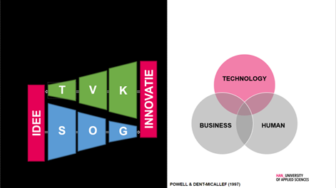
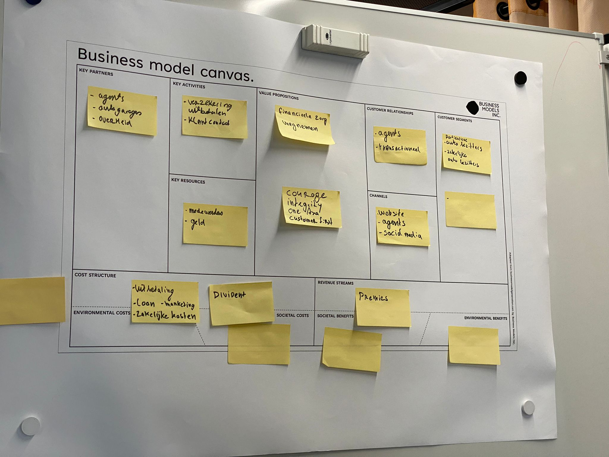
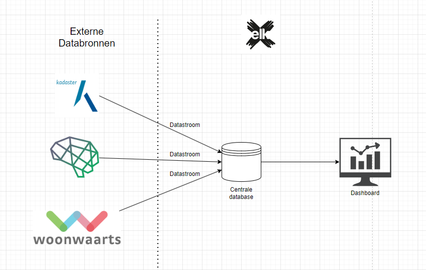

In deze workshop over digitale innovatie werd door Maarten van Gils inzicht gegeven in de huidige stand van zaken van de digitale revolutie. Hierbij werd de evolutie van idee naar innovatie belicht, waarbij het belang van zowel het ontstaan van ideeën als het ontwikkelen van innovaties werd benadrukt. (zie onderstaande afbeelding)
De lector gaf een presentatie waarin hij informeerde over de essentiële aspecten van digitale innovatie. Hij benadrukte het belang van aandacht voor elk aspect, zoals technologie, menselijke vaardigheden en de toegevoegde bedrijfswaarde.
Daarnaast werden concepten zoals de Gartner's Hype Cycle geïntroduceerd om de levenscyclus van innovaties te begrijpen, waarbij een nieuwe technologie eerst een piek van verwachtingen bereikt en daarna een periode van afname en stabilisatie doormaakt.
De workshop gaf mij een dieper inzicht in digitale innovatie en de complexe dynamiek die daarbij komt kijken. Door het bespreken van verschillende aspecten zoals ideeënontwikkeling, innovatieprocessen en de impact van technologische trends, werden we aangemoedigd om kritisch na te denken over onze eigen rol in het innovatieproces en hoe we deze kennis kunnen toepassen in professionele context.
De workshop bood een interessante kijk op de wereld van digitale innovatie en de bijbehorende uitdagingen en kansen. Het begrip van concepten zoals de Gartner's Hype Cycle kan deelnemers helpen om realistische verwachtingen te creëren en effectiever te navigeren door het landschap van voortdurende technologische veranderingen. De interactieve sessie bood tevens ruimte voor discussie en reflectie, waardoor de deelnemers actief konden bijdragen aan het leerproces.
Tijdens de workshop over waardepropositie hebben we onder leiding van Geert Rensen een casus in de context van AXA behandeld om inzicht te krijgen in hoe innovatie de waarde voor de klant kan veranderen. Via het Business Model Canvas (BMC) en design thinking kregen we de opdracht om een oplossing te bedenken voor de casus, waarbij we de impact van de innovatie op het BMC moesten analyseren.
Ons doel tijdens de workshop was om te leren hoe we waardeproposities kunnen ontwikkelen en hoe innovaties de waarde voor de klant kunnen beïnvloeden. We moesten ons richten op het begrijpen en toepassen van het Business Model Canvas en design thinking om oplossingen te bedenken. Onderstaand is een afbeelding van onze BMC van AXA.
We werden aangemoedigd om via het BMC en design thinking een innovatieve oplossing te bedenken voor de casus van AXA. We hebben geleerd over het BMC en hoe we dit model kunnen gebruiken om de verschillende aspecten van een bedrijfsmodel in kaart te brengen. Vervolgens zijn we uitgedaagd om na te denken over de impact van innovatie op het BMC en hoe we deze impact kunnen beheren en optimaliseren.
De workshop heeft me een dieper begrip gegeven van waardepropositieontwikkeling en de impact van innovatie op het BMC. Door actief deel te nemen aan het proces van het bedenken van oplossingen voor de casus en het analyseren van de impact op het BMC, heb ik praktische ervaring opgedaan in het toepassen van concepten zoals het BMC en design thinking. Het begrip van het BMC en design thinking stelt me in staat om op een gestructureerde manier na te denken over bedrijfsmodellen en innovatiestrategieën. Door de interactieve aard van de workshop kon ik actief bijdragen aan het leerproces en mijn begrip verdiepen door middel van praktische toepassingen en discussies.
Tijdens de workshop over de LEAN methodiek kregen we een introductie over Elk, inclusief hun visie en kernwaarden. Hun duidelijke boodschap en identiteit, die ze uitdragen in hun logo, slogan en personeel, maakten een sterke indruk op mij. Het enthousiasme dat ze overbrachten zorgde ervoor dat ik me verbonden voelde met hun bedrijf.
Ons doel tijdens de workshop was om inzicht te krijgen over de LEAN methodiek. We kregen een probleemstelling van Elk voorgelegd waarvoor we een oplossing moesten bedenken en presenteren. Dit stelde me in staat om mijn vaardigheden als data engineer te tonen en bij te dragen aan een praktische oplossing. Het was motiverend om mijn teamgenoten te overtuigen dat de voorgestelde oplossing relevant was voor de problemen die een data engineer oplost. Dit gaf me een gevoel van zelfvertrouwen in mijn eigen bekwaamheid. De onderstaande afbeelding is de voorgestelde data-architectuur die nodig was om het probleem op te lossen.
De workshop bood niet alleen inzicht in de LEAN methodiek, maar ook in het belang van een duidelijke boodschap en identiteit voor een bedrijf. Door actief deel te nemen aan het oplossen van de probleemstelling en het presenteren van onze oplossing, kreeg ik de kans om mijn vaardigheden te demonstreren en mijn zelfvertrouwen te versterken. De ervaring heeft benadrukt hoe belangrijk het is voor bedrijven om een duidelijke boodschap en identiteit uit te stralen. Het helpt niet alleen om uniek te zijn, maar ook om een bepaalde verwachting te creëren bij klanten.
Paul Kalis, Target Operating Model
Yvonne Peterman, Managementgame
Yvonne Pterman, dinamo model